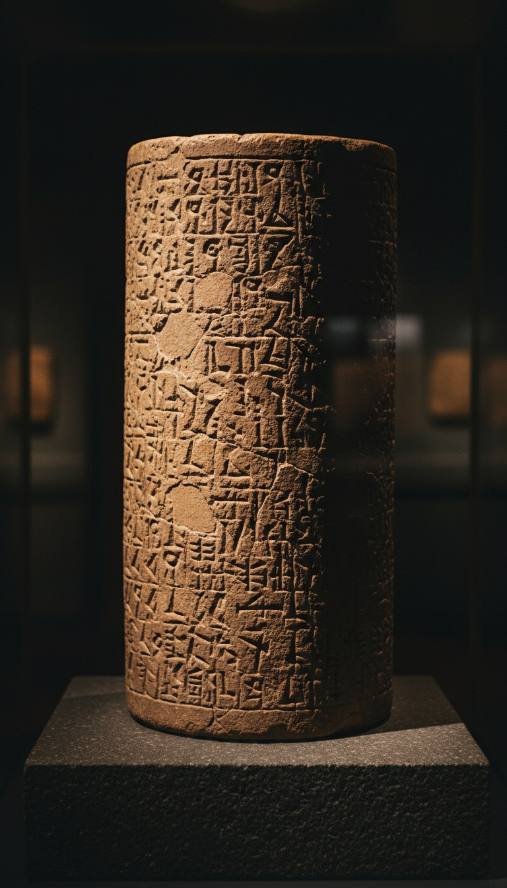

The Bible named a Babylonian king every historian swore never lived, and the clay proved the Bible right, so the hand that wrote his death sentence deserves the same respect.
Daniel chapter 5 tells it in one breath. A king throws a feast for a thousand nobles. He drinks from the gold cups stolen from the Temple in Jerusalem. Fingers with no body appear by the lampstand and write four words on the plaster. His wise men cannot read them. Daniel 5:30 closes the scene in eleven words: "In that night was Belshazzar the king of the Chaldeans slain."
For centuries that king was the weakest link in the Book of Daniel. He became the strongest.

The King the Greek Historians Erased
Every ancient source outside the Bible skipped Belshazzar completely. Herodotus, writing around 440 BC, called the last king of Babylon "Labynetus." Berossus, a Babylonian priest writing in Greek around 290 BC, named Nabonidus as the final king and gave him no son on the throne. Xenophon's Cyropaedia describes the king of Babylon dying the night the city fell and never names him.
Nineteenth-century critics built a case on that silence. In 1850 the German scholar Ferdinand Hitzig declared Belshazzar a figment of the writer's imagination. The charge stuck for a generation: the Bible invented a king, so the Bible invented the hand.
The clay was already sitting in the ground waiting to answer him.
Four Cylinders in the Ziggurat of Ur
In 1854 J. E. Taylor, the British vice-consul at Basra, dug into the corners of the great ziggurat at Ur in southern Iraq. Buried in the brickwork he found four clay cylinders, foundation deposits laid by Nabonidus himself when he restored the tower to the moon god Sin. Those cylinders are now in the British Museum in London.
The closing prayer on the cylinders names the son. Nabonidus asks the moon god to protect him, then adds a line for "Belshazzar, the eldest son, my offspring," asking the god to set reverence in his heart. In Akkadian the name is Bel-sharra-usur, "Bel, protect the king."
Three receipts now stood against Hitzig: a royal inscription, the king's own voice, and the son's name spelled out in cuneiform. The man the critics called a fiction had been buried under a temple for 2,400 years.
Ten Years in the Arabian Desert
The second tablet explains why the Greeks lost him. The Nabonidus Chronicle, catalogued at the British Museum as BM 35382, records that the king left Babylon and lived at the oasis of Tayma in the Arabian desert. Year after year the entry repeats the same line: the king was in Tayma, and the crown prince, his officials, and his army were in Akkad.
A second text seals it. The Verse Account of Nabonidus, also in the British Museum, says the king "entrusted the kingship" to his firstborn and turned his face toward Arabia. For roughly ten years the man running Babylon day to day was Belshazzar.
So Babylon had two kings at once. The Greek writers recorded the absent father. The Hebrew writer recorded the son who held the city.
The Detail No Forger Could Fake
Daniel 5 hides the proof in a job offer. Belshazzar promises that whoever reads the writing will be clothed in purple, given a gold chain, and made "the third ruler in the kingdom." He repeats the offer in verse 16 and grants it in verse 29.
Third ruler is the exact rank a co-regent could give. Nabonidus held first place. Belshazzar held second. The highest seat left to offer was third.
Critics date Daniel to around 165 BC and say a late writer could have known all this. That date destroys their own argument. By 165 BC the Greek world had Herodotus, Berossus and Xenophon, and all three had lost the son. The name and the co-regency survived only in cuneiform archives that no Greek or Hebrew historian of that era is known to have read. Whoever wrote Daniel 5 had information that would stay buried until a British diplomat broke into a ziggurat in 1854.
The writer of Daniel knew a dead prince's rank that the entire Greek world had forgotten, and the clay confirmed it two thousand years later.
That writer was right about the king, right about the father, and right about the throne. The same chapter says a hand wrote on the wall.
Four Words the Wise Men Could Not Read
The words were Mene, Mene, Tekel, Upharsin. Each one is an Aramaic unit of weight: the mina, the shekel, and the peres, a half-mina. Any merchant in the Babylon market used those words every day.
The royal scholars still failed. These were the most trained readers on earth, men who copied omens in three scripts and two languages. The Babylonian Talmud, tractate Sanhedrin 22a, records rabbinic arguments that the letters were arranged in a cipher that only Daniel could decode. Rembrandt took that tradition seriously and painted the Hebrew letters in vertical columns, following the reading of his Amsterdam neighbor, the rabbi Menasseh ben Israel.
Daniel's reading turned weights into a verdict. Numbered: God has ended your kingdom. Weighed: you were found too light. Divided: your kingdom goes to the Medes and the Persians. The last word, peres, is the Aramaic root of Paras, Persia. The wall named the army before the army arrived.
The Night Babylon Fell
The Nabonidus Chronicle dates the fall precisely. On the sixteenth of Tashritu, October 12, 539 BC, the Persian general Ugbaru entered Babylon "without battle." The Cyrus Cylinder, also in the British Museum, boasts the same thing: the city opened without a fight.
Herodotus adds what the Chronicle leaves out. The Persians diverted the Euphrates and walked in along the riverbed while the people of Babylon were celebrating a festival. Xenophon goes further and says the invaders found the king inside his palace and killed him that night.
A festival, a king inside his hall, and death before dawn. Two Greek historians who never read Daniel describe the exact scene Daniel describes.
Rembrandt froze the moment around 1636. His Belshazzar's Feast hangs in the National Gallery in London: the king twisting away from the wall, wine spilling from a gold cup, a woman recoiling, every face locked on the glowing letters. He painted the second the court understood they were already dead.
Add up the receipts. The cylinders from Ur prove the king. The Nabonidus Chronicle proves the absent father and the regency. Herodotus and Xenophon prove the feast and the night of the slaughter. Every checkable line in Daniel 5 has come back true.
One line is left. The same writer who knew a buried prince's rank, his father's desert exile and the date of the fall says fingers with no body wrote on the plaster that night. The king was real. The feast was real. The death was real. So whose hand was it, and why did it write in a script the smartest men in Babylon had never seen?
Before you go
7 books the Vatican doesn't want you reading. Free PDF — the texts they cut, with sources. Joined by 140+ Inner Circle members.
No spam. Unsubscribe anytime.
Go deeper
The Hidden Canon, Vol. I — Enoch. Jubilees. Thomas. Mary. Judas. 90 pages, 14 chapters, every receipt cited. The books your Bible quietly removed.
Read the Canon →Books that informed this investigation
As an Amazon Associate, Hidden Epoch earns from qualifying purchases. Cost to you: nothing.
Research safely
The VPN we use to research without being tracked. First 3 months free.
Get NordVPN →